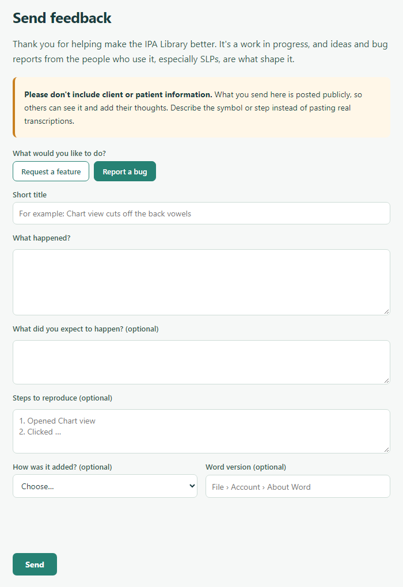

1The new homepage

2How a submission travels
3What the form looks like

?type=bug; the bug-only fields appear. The gap above Send is where Turnstile renders on the live site.SLP privacy: issues are public, so the form opens with a clear warning not to include client or patient information. There's no name or email field, so nobody's contact details end up in public.
Safeguards
| Risk | Guard |
|---|---|
| Token theft | Only in the Worker, as a secret. Fine-grained: Issues read/write on this repo only, and it expires. |
| Bots and spam | Turnstile on every send, a hidden honeypot field (fake success, no issue), an origin allowlist and length limits. |
| @mention pings | @name becomes @name (zero-width space), so nobody is notified. |
| Error leaks | Friendly messages in the browser; details only in the Worker logs. |
4Your one-time setup (tick as you go; it remembers)
- Make a free Cloudflare accountdash.cloudflare.com → Sign up
- Create a Turnstile widgetTurnstile → Add widget · name "JBC Speech feedback" · hostname
tcanterbury.github.io· mode Managed → note the site key and secret key - Create a fine-grained GitHub tokenSettings → Developer settings → Fine-grained tokens · only
jbc_speech· Repository permissions → Issues: Read and write · set an expiry and a reminder → token - Point Cloudflare's build at the worker folder and add the secretsWorkers & Pages →
jbc-speech-word-addin→ Settings → Build: Root directoryworker, Build command empty, Deploy commandnpx wrangler deploy. Then Variables and Secrets → addGITHUB_TOKENandTURNSTILE_SECRETas type Secret. Then retry the latest build. Without the root directory, Cloudflare servessite/as a plain page instead of running the Worker. - Connect the formDone:
src/feedback-config.jspoints atjbc-speech-word-addin.jbcspeech.workers.dev/feedbackwith the site key. - Send a testOpen the live feedback page, send one, check the issue appears with the
web formlabel, then close it.
secret values (token, Turnstile secret key) never go into chat or a file. public values (Worker URL, site key) are fine to share.
5Tests
6 new tests, 24 in total, in tests/feedback.test.mjs, with stand-ins for Turnstile and GitHub:
- validation limits, the honeypot and bug-only fields
- issue title, labels and neutralized @mentions
- success path: Turnstile checked first, then GitHub called with the server-side token, which never appears in the reply
- other origins, failed checks and bad input rejected without calling GitHub
- CORS preflight, and a 503 when the Worker isn't configured